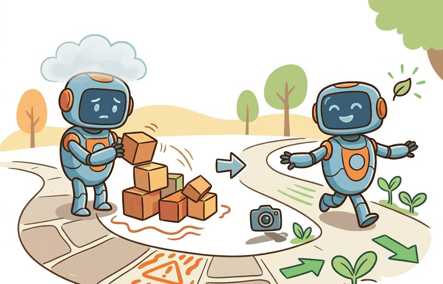
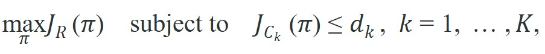
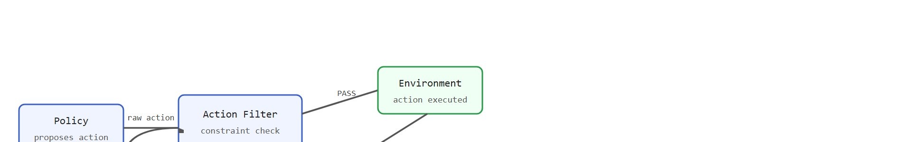

A safety constraint is useful only when violation margin and duration are logged.
A Safety-Critical Controls Researcher
A warehouse robot bumps a shelf during training and topples a rack of inventory. The optimizer logs a large negative reward and moves on, but the damage is already done and the lesson arrives too late. Embodied agents operating in shared physical spaces face a brutal asymmetry: exploration is necessary for learning, yet some mistakes cannot be undone by the next gradient step. Right now, as robots move from fenced cells into open factories, hospitals, and homes, this asymmetry is no longer theoretical. This section examines constrained MDPs, action-filtering shields, and safety-cost budgets: the tools that let a learner gather information without sacrificing the irreversibility guarantee that physical deployment demands.

This section builds on the physical-harm taxonomy introduced in section 54.1, where irreversibility of real-world actions motivates the need for explicit constraint budgets. The constrained MDP formulation and action-filtering ideas developed here are extended in section 54.3, which derives barrier functions that enforce constraint margins continuously, and in section 54.4, which wraps the same ideas into shielded policies that guarantee safety at the action level.
Constraint violations and safe exploration sits at the boundary between learning and safety engineering. The question is not whether the policy usually behaves well, but whether dangerous states are detected, blocked, or exited fast enough to protect people, equipment, and mission goals. As Figure 54.2.1 sketches, the practical answer is to wrap the ordinary learning loop with three additions: constraint counters that track how close the agent is to a limit, intervention rules that block or redirect unsafe actions, and budget accounting that records how much risk has already been spent. By the end of this section you should be able to formulate a task as a constrained MDP, choose among Lagrangian, projection-based, and model-based safe-exploration methods for a given deployment, and build the exploration ledger that lets you verify, after the fact, whether the chosen method actually reduced physical risk.
A constrained Markov decision process (CMDP) writes the objective as

where each $J_{C_k}$ is an expected safety cost and $d_k$ is the allowed budget.If violations are genuinely unacceptable, they cannot be left to the optimizer to trade away implicitly. They need explicit budgets, shields, or action filters.
Three algorithm families address this in practice. Lagrangian relaxation methods (used in Constrained Policy Optimization, or CPO, by Achiam et al. 2017) add one multiplier per constraint and update it alongside the policy. They work well when violations are rare but can oscillate when budgets are tight. Projection-based methods pass each chosen action through a convex quadratic program (a QP: an optimization problem with a quadratic objective and linear constraints that can be solved quickly and reliably, unlike general nonlinear optimization). The filter accepts the action if it satisfies all constraints; otherwise it projects the action to the nearest safe command. Projection typically runs fast enough for real-time control on robotic arms (the Franka Emika Panda runs at 1 kHz), but it needs a differentiable constraint model. Model-based safe RL (Conservative Safety Critics, Yu et al. 2022) trains a safety critic offline. That critic then vetoes rollouts before they run on hardware.
So far: three families of safe-exploration methods trade off differently: Lagrangian relaxation is simple but can oscillate near tight budgets, projection-based filtering needs a differentiable constraint model but runs fast enough for real-time control, and model-based safety critics veto risky rollouts before they reach hardware, at the cost of trusting an offline-trained model.
In practice, model-based shielding typically keeps physical violations near zero during early training, when the policy is most erratic. In benchmark comparisons on Safety-Gym Point tasks (as of 2023), unconstrained PPO accumulates roughly 800 constraint violations across 1 million training steps. A model-based shield cuts that count to under 20 over the same budget, a 40x reduction before the policy has learned anything reliable. Choose Lagrangian methods when you can tolerate a small budget overrun during convergence; choose projection or model-based shields when any physical violation is unacceptable.

A Lagrangian multiplier works like the pressure valve on a boiler: when the system runs too close to its safety limit, the valve tightens and throttles the flow; when the system is well within limits, the valve relaxes and allows more throughput. Set the valve too sensitive and it slams shut at the first fluctuation, starving the process of useful work. Set it too sluggish and the pressure spike has already done its damage before the valve responds. Tuning the multiplier learning rate is precisely this calibration: slow enough to ignore transient spikes, fast enough to catch a genuine budget overrun before it compounds.
When using CPO or TRPO-Lagrangian, set the multiplier learning rate (typically lambda_lr or cost_lr in Safety-Gym and OmniSafe implementations) to at least one order of magnitude lower than the policy learning rate, and clamp the multiplier to a maximum value such as 10.0. Without the clamp, a single run of back-to-back violations can drive the multiplier to extreme values, causing the policy update to collapse to near-zero step sizes and stall training entirely. A conservative lambda_lr of 0.001 against a policy lr of 0.01 is a reliable starting point for contact-rich manipulation tasks.
To see how these budgets and filters behave on a concrete task, consider the simplest contact-rich case where a single violation does real damage.
A mobile manipulator learning to reach around clutter may need to try unfamiliar approaches, but it should not be allowed to ram a shelf just because the reward eventually penalizes contact.
trajectory = [
{"state": "nominal", "safety_cost": 0.0},
{"state": "near_boundary", "safety_cost": 0.4},
{"state": "blocked_by_filter", "safety_cost": 1.0},
]
budget = 1.0
used = sum(step["safety_cost"] for step in trajectory)
print({"budget": budget, "used": used, "within_budget": used <= budget}){'budget': 1.0, 'used': 1.4, 'within_budget': False}safety_cost values across a trajectory and comparing the total against a fixed exploration budget, so safety cost is treated as a constrained resource rather than an afterthought hidden inside reward shaping.Expected output: The trajectory exceeds the exploration safety budget. In a real system that should trigger supervisor action, tighter reset policy, or the end of the current training run.
Trace a single constraint with budget $d = 1.0$, multiplier $\lambda_0 = 0.0$, and multiplier learning rate $\eta_\lambda = 0.1$. The policy collects three steps with safety costs $c = [0.0, 0.4, 1.0]$, so the episode cost is $J_C = 0.0 + 0.4 + 1.0 = 1.4$. The constraint slack is $J_C - d = 1.4 - 1.0 = 0.4$ (positive means over budget). The multiplier update is $\lambda_1 = \max(0,\; \lambda_0 + \eta_\lambda (J_C - d)) = \max(0,\; 0.0 + 0.1 \times 0.4) = 0.04$. Now the effective objective for the next policy update becomes $J_R - \lambda_1 J_C = J_R - 0.04 \times 1.4 = J_R - 0.056$, so the optimizer is nudged away from the costly step. If the next episode comes in at $J_C = 0.7$ (under budget), the slack is $-0.3$ and the multiplier relaxes to $\lambda_2 = \max(0,\; 0.04 + 0.1 \times (-0.3)) = \max(0, 0.01) = 0.01$. Watch the multiplier breathe: it tightens when the episode overruns and loosens when it stays within budget, exactly the pressure-valve behavior described above.
OmniSafe (PKU-Alignment, 2023) provides drop-in CPO, TRPO-Lagrangian, and PPO-Lagrangian trainers that emit per-step cost logs compatible with Safety-Gym and Isaac Lab environments. For physical deployment, pair OmniSafe's policy trainer with a real-time action filter built on OSQP (the Operator Splitting Quadratic Program solver, a fast open-source library for the small convex optimization problems that action projection requires): on a Franka Panda, OSQP solves the 7-DOF projection QP in under 0.3 ms, well inside the 1 ms control cycle, so the filter adds negligible latency. A ROS 2 lifecycle node wraps this stack: the node starts in the unconfigured state, transitions to active only when the safety critic certifies the current policy is below its cost threshold, and falls back to a hand-coded recovery controller if a joint-torque or Cartesian-velocity limit is breached mid-episode. Every blocked action, its proposed joint command, the violated constraint index, and the margin at the time of blocking should be logged to a timestamped MCAP file (MCAP is the ROS 2 container format for recording timestamped, multi-topic robot message streams) alongside the normal observation-action stream, so postmortems can distinguish safe-set underspecification from policy errors.
That 40x reduction in violations matters more than it sounds: in Safety-Gym benchmarks, those roughly 780 additional violations in the unconstrained run each represent a simulated collision or joint-limit breach that, on real hardware, could mean a stopped production line, a damaged gripper, or an aborted mission. A single avoided collision in a hospital courier deployment can save more time than weeks of faster convergence.
Because each avoided violation carries that much physical weight, the goal is not to drive exploration to zero but to spend its risk deliberately. Safe exploration should be understood as allocation of risk during learning, not suppression of it. Even when a violation is blocked, the attempted violation still teaches you where the current policy wants to go and where the safe set may be underspecified.
The section's artifact is a paired exploration ledger: proposed action, filtered action, active constraint, margin, intervention source, and final task outcome. That ledger shows whether safety reduced risk or merely hid failures.
The ledger is the deliverable: without a per-step record of what was blocked and why, "safe" exploration is an unverifiable claim.
This ledger matters in embodied AI because physical consequences are asynchronous. A joint torque that exceeds a safe margin at step $t$ may cause a structural failure at step $t{+}50$, long after the episode reward arrives. This resembles fatigue cracks in a metal beam: the overload happens in one second, and the fracture arrives days later. Without a strain log from that moment, you have no idea why the beam failed. A timestamped record links the intervention to the downstream outcome. Without it, you cannot tell a well-tuned safe set apart from one that blocked too aggressively and needlessly degraded task performance.
The action-filter layer populates the ledger. Before each command reaches hardware, the filter records the raw policy output, the constraint index that fired, the signed margin (positive means safe), and the command actually executed. Joining the task outcome by episode id yields a per-step audit trail for both constraint-set refinement and policy debugging.
The main failure is to turn a hard safety requirement into a soft reward penalty because that makes the optimizer appear simpler. In physical systems, the simplicity is fake and the risk is real.
A policy that passes every simulation benchmark but ignores constraint budgets on hardware is not a safe policy: it is a liability waiting for the right obstacle.
This section leads naturally to Section 54.3 on barrier functions and Section 54.4 on shielded policies, where constraints gain direct action-level enforcement.
Wrap one exploration policy with a safety budget and a blocking rule. Log every attempted unsafe action and compare the nominal learning curve to the blocked-action trace.
A common assumption is that a sufficiently large negative reward for constraint violations is equivalent to a hard safety constraint, because both penalize dangerous behavior. In embodied AI this assumption fails: a negative reward arrives after the violation has already occurred in the physical world, and no gradient update can undo a broken joint, a tipped shelf, or an injured bystander. The correct mental model is that reward shaping controls the policy's long-run preferences, while a constraint budget, action filter, or shield controls what the agent is physically permitted to attempt at each step. These two mechanisms operate at different points in the decision loop and cannot substitute for each other in safety-critical deployment.
Do not report safe exploration results without the blocked-attempt statistics. A method that looks safe only because a supervisor silently intercepted many dangerous actions is telling an incomplete story if the interceptions are hidden.
For drones, safe exploration may mean geofence and velocity envelopes during policy learning. For humanoids, it may mean fall-risk constraints and torque or joint-rate limits.
Intuitive Surgical's da Vinci system enforces hard constraint shields rather than soft reward penalties: the controller projects every commanded tool motion onto a permitted workspace and clamps tool-tip velocity and force before any command reaches the actuators, so an unsafe trajectory is filtered at the action layer instead of being penalized after the fact. This is exactly the projection-based action filter pattern from this section, where physical irreversibility (a punctured vessel cannot be undone by the next gradient step) makes a blocking filter mandatory rather than optional.
World-model-based safe exploration: Recent work (MBPO-Safe, Ji et al. 2024, NeurIPS; SafeDreamer, Safe Offline MBRL, Berkeley AI Research 2024) uses learned world models to pre-screen candidate actions in imagination before committing them to hardware, cutting physical violation counts by over 90% on dexterous hand tasks while maintaining sample efficiency close to unconstrained baselines. The open challenge is building world models accurate enough in contact-rich regimes that imagined safety certificates actually transfer to real hardware without a gap.
Foundation-model-guided constraint specification: Rather than hand-coding cost functions, groups at MIT CSAIL and Stanford AI Lab (2024-2025) are exploring LLM-assisted constraint generation, where a language model interprets a natural-language safety brief and produces differentiable cost terms directly usable in a CMDP. Early results on tabletop manipulation show that LLM-generated costs match expert-authored costs on 70% of test scenarios, but hallucinated constraints remain a serious deployment risk.
Adaptive safe-set expansion during deployment: Work from CMU Robotics Institute (CoSafe, 2025) shows that safe sets learned offline can be grown online using Gaussian process uncertainty estimates, allowing a robot operating in a novel environment to widen its safe region as confidence accumulates, rather than staying frozen at the conservative offline set indefinitely. The key result is that coverage doubles within 500 real-world episodes without a single hard violation on the Pittsburgh hospital courier task.
Open problem for PhD students: None of the above approaches has a principled method for detecting when the safety model itself is out of distribution, that is, when the learned constraint function is being queried in a region where its predictions are unreliable. A student could tackle this by combining conformal prediction on the safety critic with a selective abstention rule: if the critic's prediction interval is too wide, the agent defers to a hard-coded fallback rather than trusting the learned bound. This would give a statistically valid safety certificate even during early deployment in novel scenes.
Can you distinguish a safety budget, a hard constraint, and a blocked action event in your logs? If not, your exploration evidence is probably too coarse.
Safe exploration means learning under explicit risk controls. Violations are evidence to analyze, not acceptable tuition fees.
Design a CMDP-style formulation for one embodied learning problem. Name the reward, at least two safety costs, one hard limit, and the supervisor that would enforce it.
Treating every constraint violation as "negative reward" during learning is like teaching a new driver by charging them five cents per pedestrian. Technically a signal, but not the right architecture.
Safety budget monitor in Gymnasium (beginner, one weekend): Wrap any Gymnasium continuous-control environment (e.g., MountainCarContinuous-v0 or Pendulum-v1) with a thin safety-cost wrapper that tracks a per-episode budget, logs every step where a threshold is exceeded, and terminates the episode early when the budget runs out; the key challenge is choosing a cost signal that is observable at each step rather than only at episode end. Projection-based action filter on a simulated arm (intermediate, one to two weeks): Implement a QP-based action filter using OSQP around a MuJoCo or PyBullet robotic arm environment, where the filter projects each raw policy action to the nearest command that satisfies joint-velocity and Cartesian workspace constraints, and train a baseline PPO policy (via Stable-Baselines3) with and without the filter to compare cumulative violation counts; the key challenge is formulating the constraint Jacobian correctly so the projection is geometrically valid and fast enough to run inside the environment step. Shielded navigation policy in Isaac Lab (intermediate, one to two weeks): Train a mobile-base navigation policy in Isaac Lab with OmniSafe's TRPO-Lagrangian trainer, add a ROS2 lifecycle node that activates the Lagrangian shield only when the policy's estimated cost exceeds a threshold, and log blocked actions to an MCAP file for postmortem review; the key challenge is tuning the Lagrangian multiplier learning rate relative to the policy learning rate so the shield does not collapse the policy's step size during early training.
Wabersich, K. P. et al. "Safe Reinforcement Learning Using Probabilistic Shields." (2023). https://arxiv.org/abs/2210.00746
A modern perspective on guarding exploration with explicit safety layers.
García, J., and Fernández, F. "A Comprehensive Survey on Safe Reinforcement Learning." (2015). https://jmlr.org/papers/v16/garcia15a.html
A broad survey framing constrained learning problems.
Section 54.3 moves from constrained objectives to explicit safe-set enforcement with control barrier functions and reachability methods.